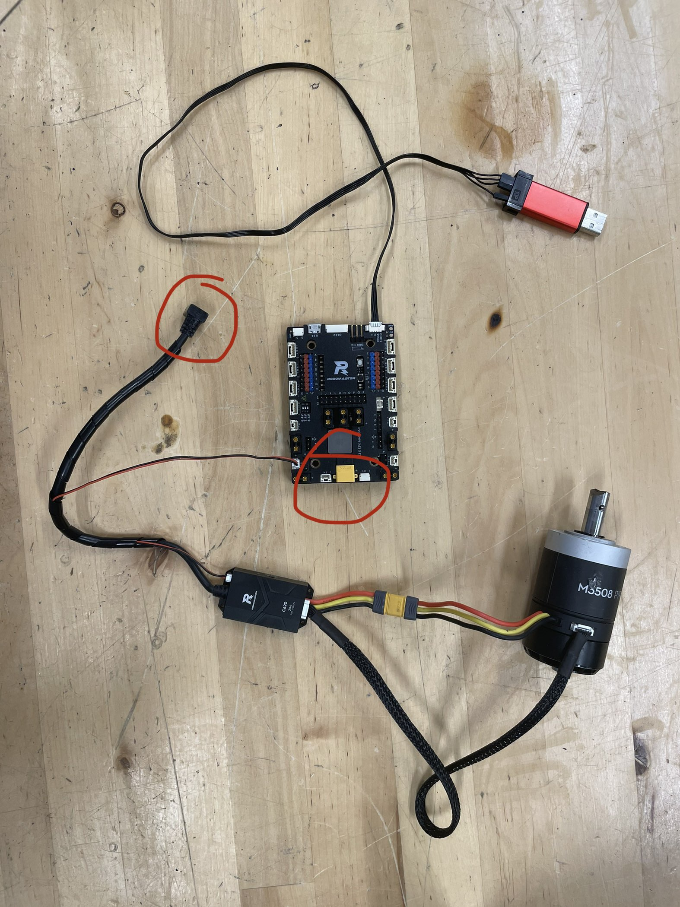

Step 1
Gather your motor, ESC, and board. Make sure you have a working ESC. There are a lot that don't work. If it is a new ESC or has pink tape, its confirmed to be working. Connect them as shown in the photo below;
you'll need to connect 7 pin cable from the ESC to the motor as well as their power and
etc, and then connect the CAN cable from the ESC to the board. If you don't know what
CAN is, it basically allows us to control all the motors as long as they're connected to
the CAN port, even if they're connected through each other instead of directly.
IMPORTANT: your laptop cannot provide the needed 20 volts, so you will need to
provide a 20v power source to ONE of the circled areas. Do this with a BATTERY, since
using a power supply will likely ruin the power supply.

Step 2
Plug it all in! Connect your board to your laptop, and then connect your power to your board/motor.
If all goes well, nothing will blow up and your motor should emit a small whirring sound.
Step 3
Time to write your first motor code! Click here for
some code to start you off with! Go ahead and copy/paste it into your main.cpp file, and play around with it. If all goes well,
running this code should make the motor spin!